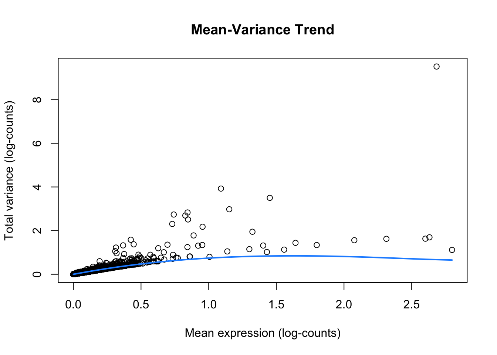
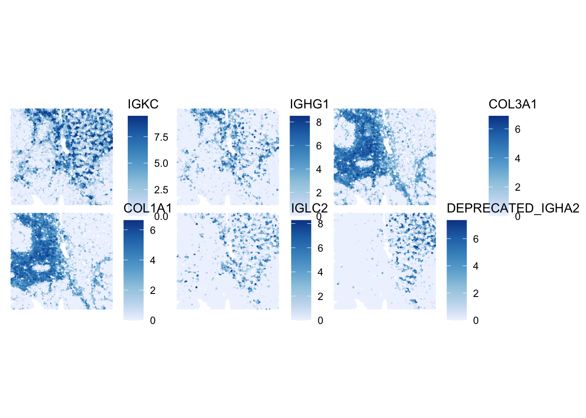
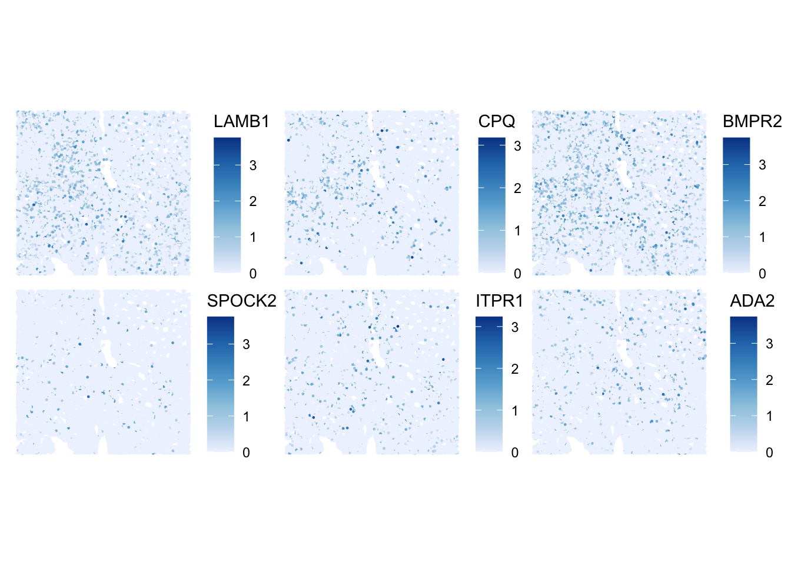
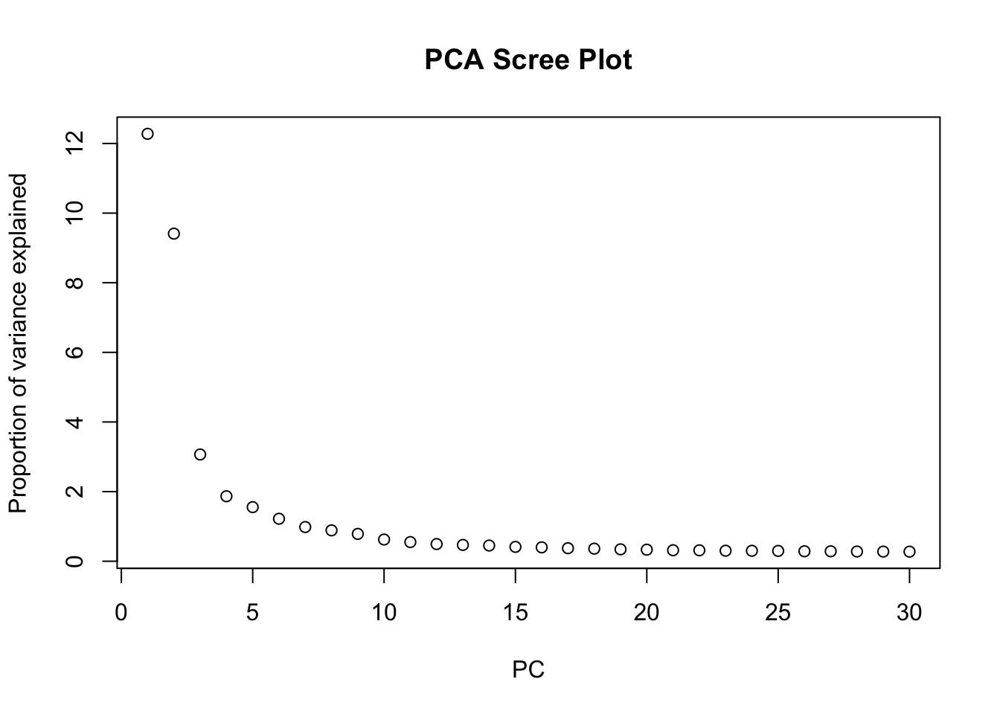
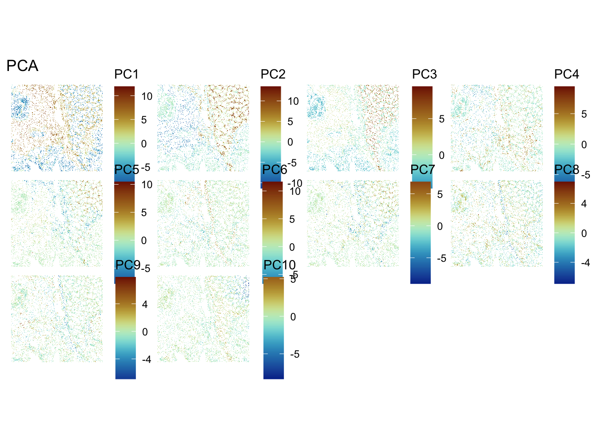
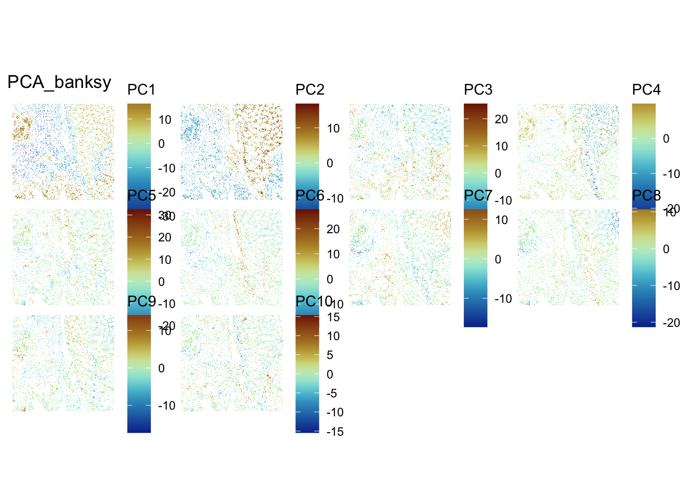
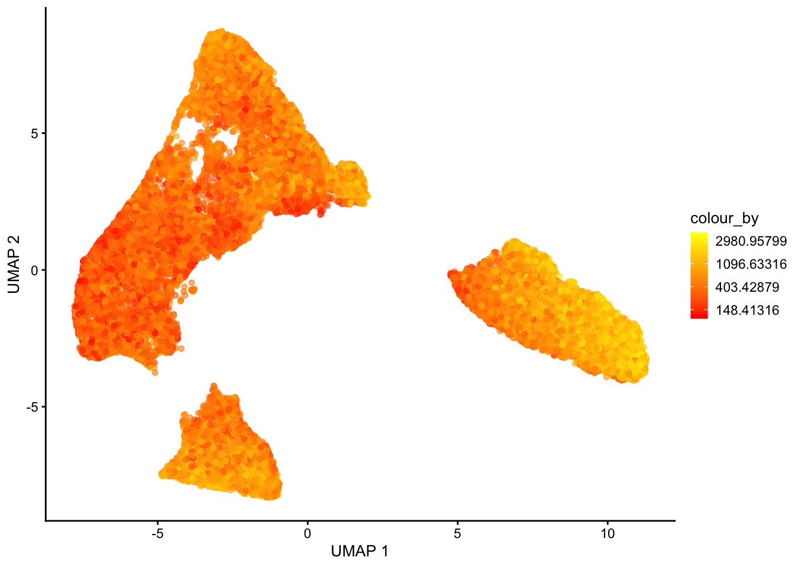
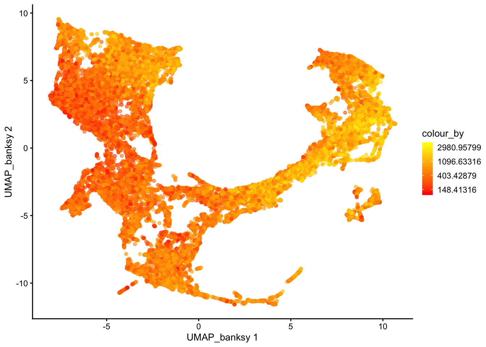

library(SpatialExperiment)
library(SpatialFeatureExperiment)
library(Voyager)
library(scran)
library(scater)
library(ggplot2)
library(patchwork)
library(bluster)
library(escheR)
library(pheatmap)
library(HDF5Array)
library(alabaster.sfe)
library(ggspavis)
library(nnSVG)
library(Banksy)
library(igraph)Exercise 5: Feature Selection and Dimensionality Reduction
Feature Selection and Dimensionality Reduction
In this section we will focus on feature selection and dimensionality reduction of spatial transcriptomics data, which are important preprocessing steps before downstream analysis such as clustering and marker gene identification. We will focus on the specific challenges and considerations when dealing with spatially-resolved transcriptomics data, as opposed to traditional single-cell RNA-seq data.
Learning Objectives
By the end of this exercise, you will be able to:
- Perform feature selection to identify highly variable genes (HVGs) and spatially variable genes (SVGs).
- Apply dimensionality reduction techniques like PCA.
- Visualize the results of dimensionality reduction in both reduced dimension space and spatial context.
Libraries
Load SpatialFeatureExperiment object
We will start by loading the normalized Visium HD dataset stored in the SpatialFeatureExperiment object generated in the previous exercise. It contains filtered cells, and genes with at least 1 count across all retained cells.
# Reload the SpatialFeatureExperiment object if not in the R session already
sfe <- readObject("results/day2/02.1_sfe/")
sfeclass: SpatialFeatureExperiment
dim: 18878 33763
metadata(2): resources spatialList
assays(2): counts logcounts
rownames(18878): OR4F5 SAMD11 ... DEPRECATED_ENSG00000291096
DEPRECATED_TRIM16L
rowData names(4): ID Symbol Type subsets_Mito
colnames(33763): cellid_000080404-1 cellid_000080411-1 ...
cellid_000189331-1 cellid_000189341-1
colData names(31): sample_id area ... artifact sizeFactor
reducedDimNames(1): PCA_artifacts
mainExpName: Gene Expression
altExpNames(0):
spatialCoords names(2) : pxl_col_in_fullres pxl_row_in_fullres
imgData names(4): sample_id image_id data scaleFactor
unit:
Geometries:
colGeometries: centroids (POINT), cellSeg (POLYGON)
Graphs:
sample01:
Note
Feel free to use the normalized Xenium dataset, and compare your results to the others.
Feature Selection
Highly Variable Genes (HVGs)
Similar to scRNA-seq analysis, feature selection is a crucial step to focus on genes that are most likely to show significant biological variation across cells, and thus increase the signal to noise ratio. We typically aim at focusing on “Highly Variable Genes” (HVGs) as these are more likely to distinguish different cell types or spatial domains.
In order to identify HVGs, we will first model the gene variance using a Poisson-noise model with scran::modelGeneVarByPoisson()
Note
this function will soon be deprecated in favor of the faster scrapper::chooseRnaHvgs.se()
# Model gene variance to identify highly variable genes.
# This function fits a mean-variance trend to the log-normalized counts.
dec <- modelGeneVarByPoisson(sfe)
## Sort by biological variance
dec <- dec[order(dec$bio, decreasing = T), ]
# Visualize the mean-variance relationship and the fitted trend.
# This plot helps to understand how gene variability changes with expression level.
plot(dec$mean, dec$total,
xlab = "Mean expression (log-counts)",
ylab = "Total variance (log-counts)",
main = "Mean-Variance Trend"
)
curve(metadata(dec)$trend(x), add = TRUE, col = "dodgerblue", lwd = 2)
ImportantExercise 1
How do you interpret this plot, compared to similar ones generated from scRNA-seq datasets?
Once we have modeled the gene variance, we can proceed to select the top HVGs. For demonstration purposes, we will visualize the expression patterns of the top 6 HVGs on the tissue slide. We exclude the mitochondrial genes, since those genes tend to be highly variable but do not provide much information about cell types or spatial domains.
# Top 6 HVGs
top_HVG <- row.names(dec)[1:6]
top_HVG[1] "IGKC" "IGHG1" "COL3A1" "COL1A1"
[5] "IGLC2" "DEPRECATED_IGHA2"# Create a plot to visualize the logcounts expression for each gene in top_HVG
plotSpatialFeature(sfe, features = top_HVG) 
ImportantExercise 2
How would you define the spatial expression patterns of these genes? Look a bit for some information on these genes (e.g., on the Uniprot website) to get a hint at which cell types and domains they could highlight.
For downstream analysis, we use the defined larger group of HVG, see the list in the rowData slot:
# Select the top 1000 highly variable genes.
hvg <- getTopHVGs(dec, n = 1000)
# Store HVG information in rowData
rowData(sfe)$hvg <- rowData(sfe)$Symbol %in% hvg
# Display the range of biological variation for the selected HVGs
dec[rownames(sfe)[rowData(sfe)$hvg], ]$bio |> summary() Min. 1st Qu. Median Mean 3rd Qu. Max.
0.01172 0.01499 0.02112 0.08338 0.04127 8.84989 Spatially Variable Genes (SVGs)
Here, the idea is to get an intuition about the difference between HVGs and SVGs. For this, we first select randomly 6 other HVGs from the list, and plot their expression:
# Select randomly 6 HVGs
set.seed(123)
random_HVG <- sample(row.names(sfe)[rowData(sfe)$hvg], size = 6)
# Create a plot for each gene in random_HVG
plotSpatialFeature(sfe, features = random_HVG) 
ImportantExercise 3
How would you define the spatial expression patterns of these genes in comparison to the top_HVG list? Which ones would you qualify as SVGs?
Bonus: SVG detection with nnSVG
nnSVG detects SVGs by modeling spatial gene expression using Gaussian processes, capturing smooth gradients or spatial trends.
Note
nnSVG is quite slow to run, so we will launch it only on the top HVGs. While it is running, take a look at the nnSVG paper and the package vignette to better understand how the method works, including its handling of covariates and multiple samples.
We will launch it on a small subset of the HVGs
set.seed(123)
random_HVG <- sample(row.names(sfe)[rowData(sfe)$hvg], size = 20)
sub <- sfe[random_HVG, ]
set.seed(123)
sub <- nnSVG(sub)
ImportantExercise 3b
Inspect the nnSVG output stored in rowData(sub).
- What do the result columns represent?
- Select the top SVGs detected by
nnSVG, what do you notice? Are all HVGs also SVGs?
TipAnswer
# Select top SVGs
res_nnSVG <- rowData(sub)
res_nnSVG <- res_nnSVG[order(res_nnSVG$pval), ]
head(res_nnSVG)DataFrame with 6 rows and 19 columns
ID Symbol Type subsets_Mito hvg
<character> <character> <factor> <logical> <logical>
MDFIC ENSG00000135272 MDFIC Gene Expression FALSE TRUE
YWHAZ ENSG00000164924 YWHAZ Gene Expression FALSE TRUE
BMPR2 ENSG00000204217 BMPR2 Gene Expression FALSE TRUE
DDIT4 ENSG00000168209 DDIT4 Gene Expression FALSE TRUE
ITPR1 ENSG00000150995 ITPR1 Gene Expression FALSE TRUE
ADA2 ENSG00000093072 ADA2 Gene Expression FALSE TRUE
sigma.sq tau.sq phi loglik runtime mean var
<numeric> <numeric> <numeric> <numeric> <numeric> <numeric> <numeric>
MDFIC 0.00378417 0.1064014 5.91250e+00 -10537.97 5.036 0.0783034 0.1101381
YWHAZ 0.07322184 0.3723851 2.58846e+00 -32390.28 3.061 0.4392026 0.4410260
BMPR2 0.01101202 0.1670222 3.44077e+01 -18528.95 4.599 0.1402710 0.1778655
DDIT4 0.00556181 0.0715665 9.87672e+01 -4507.21 2.942 0.0558141 0.0770677
ITPR1 0.00110560 0.0629643 7.24635e-05 -1477.40 3.220 0.0470433 0.0640744
ADA2 0.00781089 0.1109479 8.37616e+01 -11792.91 3.913 0.0855133 0.1188903
spcov prop_sv loglik_lm LR_stat rank pval padj
<numeric> <numeric> <numeric> <numeric> <numeric> <numeric> <numeric>
MDFIC 0.785606 0.0343436 -10666.20 256.4530 16 0 0
YWHAZ 0.616106 0.1643193 -34087.06 3393.5474 4 0 0
BMPR2 0.748110 0.0618534 -18757.37 456.8333 12 0 0
DDIT4 1.336177 0.0721111 -4638.63 262.8368 15 0 0
ITPR1 0.706808 0.0172562 -1521.65 88.5021 18 0 0
ADA2 1.033515 0.0657711 -11957.06 328.2928 14 0 0top_nnSVG <- res_nnSVG$Symbol[seq_len(6)]The main output is in rowData of the SpatialExperiment object, which includes: the likelihood ratio statistic (LR_stat), the gene’s rank based on this statistic (rank), raw p-values from a chi-squared test with 2 degrees of freedom (pval), p-values adjusted for multiple testing (padj), and the estimated effect size (prop_sv), defined as the proportion of spatial variance relative to total variance.
Dimensionality Reduction (DR)
Thereafter we make use of the highly variable genes (HVGs) to perform dimensionality reduction and clustering.
Non-spatially aware DR
PCA
We can perform dimensionality reduction using Principal Component Analysis (PCA) on the log-normalized expression values of the HVGs. This method is agnostic to spatial information, and focuses solely on capturing the main axes of variation in the gene expression data.
# Run PCA on the log-normalized counts of the HVGs
sfe <- runPCA(sfe, ncomponents = 30, subset_row = rowData(sfe)$hvg)
# Visualize the explained variance by each principal component.
# This helps in determining how many PCs capture most of the variance.
plot(attr(reducedDim(sfe, "PCA"), "percentVar"),
xlab = "PC", ylab = "Proportion of variance explained",
main = "PCA Scree Plot"
)
ImportantExercise 4
Based on the scree plot, how many principal components would you consider for downstream analysis? Why?
Bonus: You can also have look at the scran::getDenoisedPCs function to help you make this choice.
TipAnswer
We can select the first 10 PCs for downstream analysis, as they seem to capture a significant proportion of the variance in the data before the explained variance starts to level off.
Choose the number of PCs accordingly for downstream analysis. Visualize the PCs on the tissue slice coordinates.
# Run PCA on the log-normalized counts of the HVGs using the top PCs, for example 10 PCs
sfe <- runPCA(sfe, ncomponents = 10, subset_row = rowData(sfe)$hvg)
# Plot each principal component
spatialReducedDim(sfe, "PCA", 10, colGeometryName = "cellSeg",
scattermore = TRUE, divergent = TRUE, diverge_center = 0)
ImportantExercise 5
What do you notice? How do you interpret it?
Bonus Exercise
Extract the genes most associated with one of these PCs
TipAnswer
We observe a strong correlation between the PCs scores and the expression patterns observed above for the top HVGs, suggesting that they reflect cell type or domain biology.
To extract the 10 genes most associated to PC2:
attributes(reducedDims(sfe)[["PCA"]])$rotation[, "PC2"] |> abs() |> sort(decreasing = TRUE) |> names() |> head(n=10) [1] "IGKC" "JCHAIN" "DEPRECATED_IGHA2" "IGLC3"
[5] "COL3A1" "IGLC2" "COL1A1" "IGHG1"
[9] "COL1A2" "SPARC" Spatially aware DR with Banksy
We can also perform spatially aware dimensionality reduction using the Banksy method, which integrates spatial coordinates and gene expression into the PCA framework. This allows us to capture spatial patterns in the data while reducing dimensionality.
# 'Banksy' parameter settings
k <- 20 # consider first order neighbors
l <- 0.8 # use spatial information with weight lambda
a <- "logcounts" # assay to use
xy <- c("array_row", "array_col") # spatial coordinate names
# compute spatially aware 'Banksy' PCs, using the HVGs only
set.seed(112358)
tmp <- computeBanksy(sfe[rowData(sfe)$hvg, ],
assay_name=a,
coord_names=xy,
k_geom=k,
parallel=T,
num_cores=4)
tmp <- runBanksyPCA(tmp,
lambda=l,
npcs=10)
reducedDim(sfe, "PCA_banksy") <- reducedDim(tmp, "PCA_M0_lam0.8") # transfer 'Banksy' PCs to original object
ImportantExercise 6
While this is running, have a look at the Banksy paper to understand better what the method is doing.
Have a look at the sfe object to see the dimensionality reduction slots. How many dimensionality reductions are stored now? What are their names and what do they represent?
TipAnswer
sfeclass: SpatialFeatureExperiment
dim: 18878 33763
metadata(2): resources spatialList
assays(2): counts logcounts
rownames(18878): OR4F5 SAMD11 ... DEPRECATED_ENSG00000291096
DEPRECATED_TRIM16L
rowData names(5): ID Symbol Type subsets_Mito hvg
colnames(33763): cellid_000080404-1 cellid_000080411-1 ...
cellid_000189331-1 cellid_000189341-1
colData names(31): sample_id area ... artifact sizeFactor
reducedDimNames(3): PCA_artifacts PCA PCA_banksy
mainExpName: Gene Expression
altExpNames(0):
spatialCoords names(2) : pxl_col_in_fullres pxl_row_in_fullres
imgData names(4): sample_id image_id data scaleFactor
unit:
Geometries:
colGeometries: centroids (POINT), cellSeg (POLYGON)
Graphs:
sample01: reducedDimNames(sfe)[1] "PCA_artifacts" "PCA" "PCA_banksy" There are now three dimensionality reductions stored in the sfe object: :PCA_artifacts (computed to capture technical artifacts in day2-1a exercise about QC), PCA calculated above, and the newly added PCA_banksy.
“PCA” represents the non-spatially aware principal components, while “PCA_banksy” represents the spatially aware principal components computed using the Banksy method. Both methods have used HVGs for dimensionality reduction.
In the same way as before, we can visualise the Banksy PCs on the tissue slice coordinates.
ImportantExercise 7
Select PCs from Banksy dimensionality reduction space and visualise them on the tissue slice. Do you observe any spatial patterns? How do they compare to the non-spatial PCs?
TipAnswer
## Visualize PCs on the tissue slice coordinates
spatialReducedDim(sfe, "PCA_banksy", 10, colGeometryName = "cellSeg",
scattermore = TRUE, divergent = TRUE, diverge_center = 0)
ImportantBonus Exercise
Try to change Banksy parameters k and lambda. How does it affect the results?
UMAP and comparison of non-spatially aware and spatially aware DR
For visualization purposes only, we’ll produce UMAPs based on both spatially aware and not spatially aware PCA results:
# UMAP
sfe <- runUMAP(sfe, dimred="PCA", name="UMAP")
sfe <- runUMAP(sfe, dimred="PCA_banksy", name="UMAP_banksy")# Visualise
plotReducedDim(sfe, dimred = "UMAP", colour_by = "detected") +
scale_colour_gradient(trans = "log", high = "yellow", low = "red")
plotReducedDim(sfe, dimred = "UMAP_banksy", colour_by = "detected") +
scale_colour_gradient(trans = "log", high = "yellow", low = "red")
ImportantBonus question
If you tried different parameters for Banksy, how does it affect the UMAP results?
Save data for later
alabaster.sfe::saveObject(sfe, "results/day2/02.2_sfe")